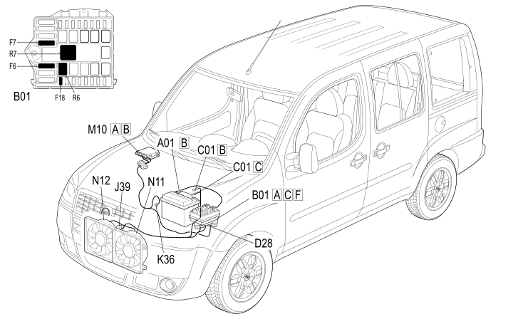

E5020 ENGINE COOLING - COMPONENT LOCATION
- Path
- Electrical equipment > 1 ELECTRICAL FUNCTIONS > E50 ENGINE CONTROL AND MANAGEMENT SYSTEMS > E5020 ENGINE COOLING > E5020 ENGINE COOLING - COMPONENT LOCATION
- Kind
- component location drawing
- Applies to
- engines: 1.9 JTD 8V; production: da 12/03; only with equipment: Climate control system and MY 2005
- Interactive page
- https://sloeber94.github.io/elrnDB-fDbl/en/#/223002798
Applies to: engines: 1.9 JTD 8V; production: da 12/03; only with equipment: Climate control system and MY 2005

Component code | Description | Reference to the assembly |
|---|---|---|
JUNCTION UNIT | ||
BATTERY EARTH | ||
ENGINE CABLES/RADIATOR CABLE COUPLING | ||
ENGINE COOLING FAN REMOTE CONTROL SWITCH | ||
ENGINE COOLANT TEMPERATURE SENSOR/SENDER UNIT | ||
ENGINE MANAGEMENT ECU | ||
ENGINE FAN MOTOR - 1 | ||
ENGINE FAN MOTOR - 2 |
Topics linked from this page (12)
- 1060G pressure pump electric control
- 1088C WATER PUMP AND THERMOSTAT
- 1088E COOLANT TEMPERATURE CONTROL DEVICES
- 5505A multi-function components
- B001 JUNCTION UNIT
- C001 BATTERY EARTH
- D028 ENGINE CABLES/RADIATOR CABLE COUPLING
- J039 ENGINE COOLING FAN REMOTE CONTROL SWITCH
- K036 ENGINE COOLANT TEMPERATURE SENSOR/SENDER UNIT
- M010 ENGINE MANAGEMENT ECU
- N011 ENGINE FAN MOTOR - 1
- N012 ENGINE FAN MOTOR - 2